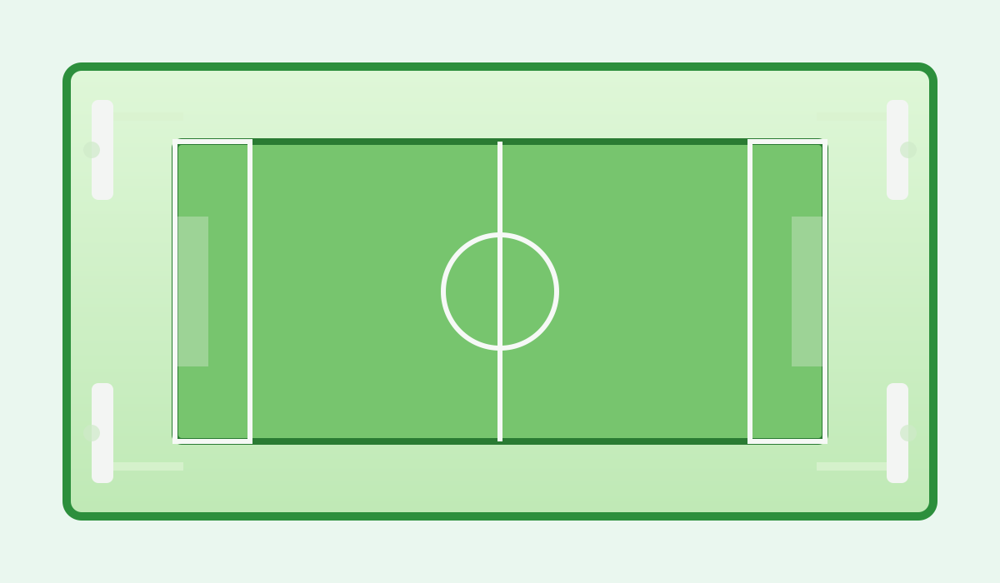

Sân 5 người
Phù hợp cho các trận đấu nhỏ, luyện tập cá nhân hoặc giao hữu giữa các nhóm bạn. Diện tích 20m x 40m, mặt cỏ nhân tạo chất lượng cao.
Dịch vụ cho thuê sân bóng cỏ nhân tạo tại Đà Nẵng
Sân Bóng Hòa Khánh là địa chỉ cho thuê sân bóng cỏ nhân tạo uy tín tại Đà Nẵng. Chúng tôi cung cấp các loại sân 5 người, 7 người và 11 người với chất lượng cỏ đạt chuẩn, hệ thống chiếu sáng hiện đại và dịch vụ phục vụ chuyên nghiệp 24/7.
Với không gian rộng rãi, sạch sẽ cùng vị trí thuận tiện, Sân Bóng Thắng Lợi là lựa chọn lý tưởng cho các trận đấu giao hữu, giải đấu phong trào và các hoạt động thể thao cộng đồng.
Phù hợp cho các trận đấu nhỏ, luyện tập cá nhân hoặc giao hữu giữa các nhóm bạn. Diện tích 20m x 40m, mặt cỏ nhân tạo chất lượng cao.
Không gian rộng rãi hơn, phù hợp cho các trận đấu đồng đội và giải phong trào. Diện tích 30m x 50m, hệ thống chiếu sáng LED hiện đại.
Sân tiêu chuẩn dành cho các trận đấu chuyên nghiệp và giải đấu lớn. Diện tích 60m x 100m, cỏ nhân tạo đạt chuẩn FIFA.

Quý khách có thể đặt sân trực tuyến qua trang Liên hệ / Đặt sân hoặc gọi hotline 0236 123 4567 để được hỗ trợ nhanh nhất.
Xem danh sách sân và lịch trống tại trang Danh sách sân.